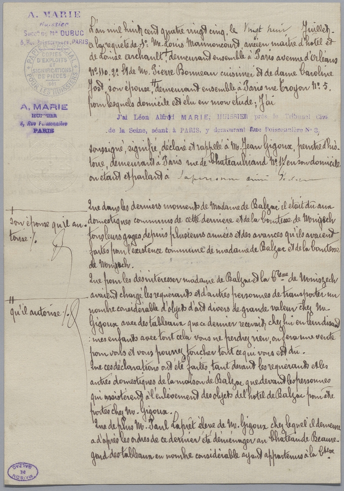
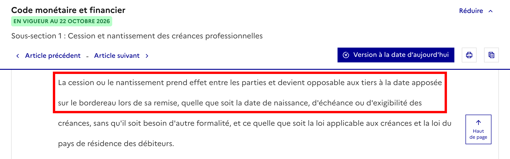
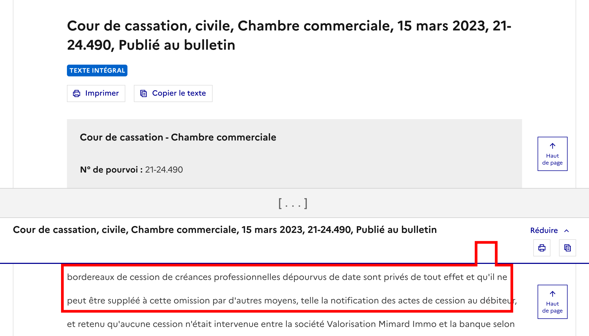
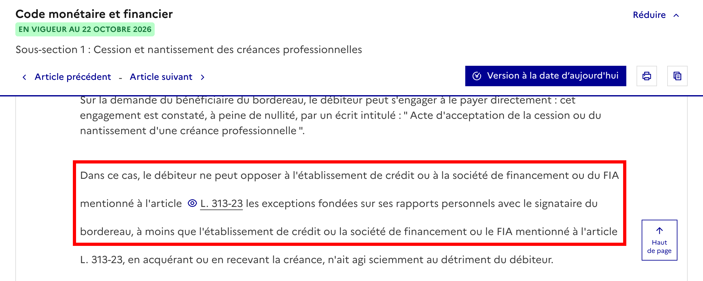
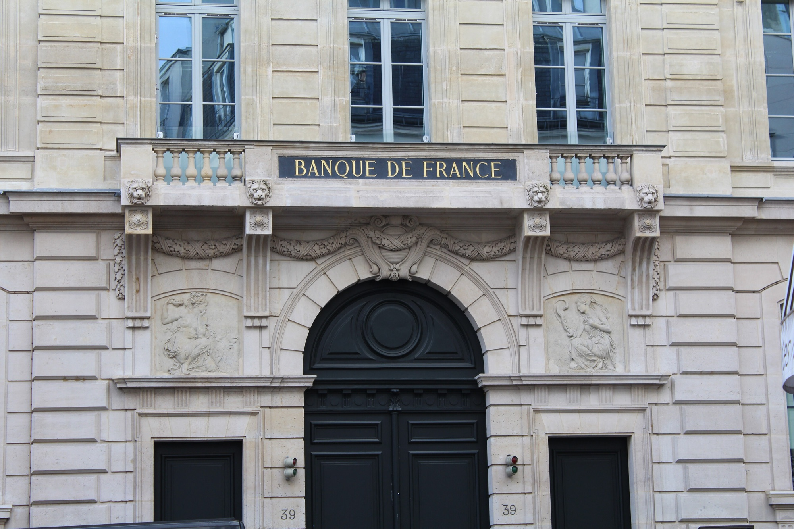

Transformer ses factures en trésorerie sans attendre le paiement du client
R5.04 Droit des activités commerciales 2 · Mme Thouement
Lia Pletinckx-Ferry, Nafissa Mbaye, Romane Da Silva & Sofian Chtioui · BUT3 MDEE · IUT de Roubaix · 2026
1 / 18
Bonjour à tous. Aujourd'hui, nous allons vous présenter la cession Dailly, un outil qu'une entreprise utilise pour obtenir de l'argent tout de suite sur ses factures, sans attendre que son client la paie.
Notre exposé suit quatre temps. D'abord pourquoi ce mécanisme existe et qui est concerné. Ensuite comment on le met en place, avec le bordereau. Puis ses effets juridiques, pour l'entreprise, la banque et le client. Et pour finir, ses avantages et ses limites.
Pour ma part, je commence par le pourquoi et les acteurs.
Le trou de trésorerie
60 jours
Délai de paiement maximal entre professionnels
L'entreprise
Salaires et fournisseurs à payer
Le client
Paie la facture à la fin du délai
Livraison et facturePaiement
45 joursfin de mois, si le contrat le prévoit
13 Md€de trésorerie en plus pour les PME sans retards de paiement
13,4 joursde retard de paiement en France, fin 2025
Sources : Code de commerce, art. L. 441-10 ; Lamy ; Banque de France, Observatoire des délais de paiement, 24/09/2026, (consulté le 15/10/2026)
2 / 18
Commençons par un problème très concret. Une entreprise livre un client professionnel et lui envoie sa facture. Mais elle ne sera pas payée tout de suite : le Code de commerce plafonne le délai à soixante jours après l'émission de la facture, ou quarante-cinq jours fin de mois si le contrat le prévoit.
Pendant ce temps, elle doit déjà payer ses salaires, ses fournisseurs, ses charges. C'est ce qu'on appelle un trou de trésorerie : l'argent est bien dû, mais il n'est pas encore dans les caisses.
Les chiffres de l'Observatoire des délais de paiement, publiés par la Banque de France en septembre 2026, montrent l'ampleur du phénomène : sans retards de paiement, les PME et les microentreprises auraient disposé de 13 milliards d'euros de trésorerie supplémentaire, et le retard moyen de paiement en France s'établissait à 13,4 jours fin 2025.
La question, c'est donc : comment récupérer cet argent plus tôt ? Pour y répondre, regardons comment le droit s'y prenait avant 1981.
De l'huissier au bordereau
Avant 1981

Signification par huissier
LourdCoûteux
→
Loi Dailly
Un simple bordereau
RapideSimple
Sources : Code civil, ancien art. 1690 ; Banque de France, fiche 421 ; Dalloz ; Lamy, (consulté le 15/10/2026) ; acte d'huissier de 1885 : Maison de Balzac, CC0
3 / 18
Avant 1981, une entreprise qui voulait céder une créance à sa banque devait suivre une règle du Code civil, l'article 1690. Concrètement, la cession devait être signifiée au client par un huissier de justice, aujourd'hui appelé commissaire de justice, ou acceptée par lui dans un acte authentique, pour être opposable aux tiers. Cet article est resté dans le Code civil jusqu'en 2016. Pour une entreprise qui a des dizaines de factures, c'était lourd et cher.
Le législateur a donc voulu un mode simplifié, adapté aux crédits des entreprises : plus besoin d'huissier, la cession se fait avec un seul document qui regroupe les factures, le bordereau.
Voyons maintenant cette loi.
Une loi, un code
19812 janvier
Loi DaillyLoi n° 81-1, du nom du sénateur Étienne Dailly
Cession de créances professionnellesPar la seule remise d'un bordereau
Code monétaire et financierArticles L. 313-23 à L. 313-35
1981Loi Dailly
1984Loi bancaire, qui la modifie
2001Code monétaire et financier
2016Fin de la signification dans le Code civil
2025Bordereau électronique
Sources : Légifrance ; Sénat ; Banque de France, fiche 421 ; Dalloz ; Lamy droit du financement, (consulté le 15/10/2026) ; portrait : Michel Malane, CC BY-SA 4.0
4 / 18
Cette loi, c'est la loi du 2 janvier 1981 « facilitant le crédit aux entreprises », que l'on appelle la loi Dailly, du nom d'Étienne Dailly, le sénateur de Seine-et-Marne qui a déposé le texte au Sénat en avril 1980. Elle permet de céder des créances professionnelles à une banque par la seule remise d'un bordereau, c'est-à-dire un document qui liste les factures cédées.
Le texte a vécu depuis. Il a été modifié par la loi bancaire du 24 janvier 1984. Il est entré dans le Code monétaire et financier, aux articles L. 313-23 et suivants, avec la codification qui date du 1er janvier 2001. En 2016, la réforme du droit des contrats a supprimé l'ancien article 1690 du Code civil : la signification par huissier a donc disparu du droit commun aussi. Et depuis le décret du 12 août 2025, le bordereau peut être électronique, à condition d'être stipulé à ordre.
Mes camarades détailleront ce bordereau et ses effets. Avant cela, il faut bien comprendre qui intervient.
Trois acteurs
Sources : Banque de France, fiche 421 ; Légifrance, art. L. 313-23 ; Dalloz, (consulté le 15/10/2026)
5 / 18
Pour comprendre le mécanisme, il faut connaître les trois acteurs.
Le cédant, c'est l'entreprise qui cède sa facture : elle veut de l'argent tout de suite. Le cessionnaire, c'est celui qui reçoit la créance : en pratique une banque, la loi vise aussi les sociétés de financement. Et le débiteur cédé, c'est le client, celui qui doit payer la facture.
Quand on parle de créance, c'est simplement le droit de se faire payer cette facture. L'entreprise cède ce droit à la banque, la banque lui accorde un crédit, et c'est ensuite le client qui règle la facture. À qui paie-t-il, et à partir de quand ? Ce sera le sujet de la partie sur les effets.
Trois conditions
1Un créditPar un établissement de crédit, une société de financement ou un FIA
2Une créance professionnelleEntre professionnels
3Une créance liquide et exigibleMême à terme, ou future
Sources : Légifrance, art. L. 313-23 ; Dalloz ; Lamy, (consulté le 15/10/2026). Textes recherchés avec Claude.
6 / 18
Pour que la cession Dailly s'applique, il faut réunir trois conditions, qui sont à l'article L. 313-23.
Un : un crédit, accordé par un établissement de crédit, une société de financement ou un fonds d'investissement alternatif, ce qu'on appelle un FIA. La cession sert de moyen d'obtenir ce crédit ou de le garantir.
Deux : une créance professionnelle, c'est-à-dire née de l'activité d'une entreprise ou d'un professionnel.
Trois : une créance liquide et exigible, c'est-à-dire d'un montant déterminé et due, même si elle n'est payable qu'à terme. La loi ajoute que peuvent aussi être cédées des créances futures, nées d'un acte déjà conclu ou à venir, dont le montant et l'exigibilité ne sont pas encore déterminés.
Quand ces conditions sont réunies, on peut passer à la formalité : le bordereau. Je laisse la parole à ma camarade pour cette partie.
Un exemple fil rouge
Dupont, travaux de peinturePhoto : Lukeroberts, CC BY-SA 2.5, Wikimedia Commons
Source : Légifrance, Code monétaire et financier, art. L. 313-23 et suivants, (consulté le 21/10/2026)
7 / 18
Je vais maintenant vous présenter les effets juridiques de la cession Dailly, et surtout ce qui arrive au client, que l'on appelle le débiteur cédé.
Pour que ce soit concret, on garde un exemple tout au long de ma partie. L'entreprise Dupont, spécialisée dans les travaux de peinture, cède à sa banque une facture de dix mille euros. Cette facture est due dans soixante jours par son client, la société Martin.
Dupont est donc le cédant, la banque est le cessionnaire, et Martin est le débiteur cédé.
Je vais vous montrer trois choses : comment la créance passe à la banque, ce qui se passe pour Martin selon ce qu'on lui a dit, et enfin la garantie que Dupont doit à la banque.
La date du bordereau fixe le transfert

L. 313-27« prend effet entre les parties et devient opposable aux tiers à la date apposée sur le bordereau lors de sa remise »
Entre les partiesDupont et la banque sont liés dès la remise
La date du bordereauApposée par la banque (L. 313-25), pas le jour du paiement
Sans date : aucun effet
Sources : Légifrance, Code monétaire et financier, art. L. 313-25 et L. 313-27, (consulté le 21/10/2026)
8 / 18
Première question : à quel moment la créance passe-t-elle à la banque ? La réponse est dans l'article L. 313-27 du Code monétaire et financier.
La cession prend effet entre les parties, et elle devient opposable aux tiers, à la date apposée sur le bordereau lors de sa remise. Opposable aux tiers, cela veut dire que tout le monde doit en tenir compte, par exemple les autres créanciers de l'entreprise.
Le jour où la facture sera payée n'a aucune importance : ce qui compte, c'est la date inscrite sur le bordereau. Cette date est apposée par la banque, qui est le cessionnaire, d'après l'article L. 313-25.
Et c'est pour cela que la date est une mention essentielle. Un bordereau qui n'est pas daté ne produit aucun effet, ni entre Dupont et la banque, ni à l'égard des tiers.
Protégée de la faillite du cédant
La créance sort du patrimoine du cédantSes autres créanciers ne peuvent pas la saisir
Les sûretés suivent la créanceMême si Dupont est en redressement ou en liquidation
Sources : CMF, art. L. 313-27 ; Cass. com., 07/12/2004, n° 02-20.732 ; C. com., art. L. 631-8, (consulté le 21/10/2026)
9 / 18
Deuxième effet : la protection contre les autres créanciers. Imaginons que Dupont soit placée en redressement ou en liquidation judiciaire après la remise du bordereau. La cession reste efficace. La loi de sécurité financière du premier août deux mille trois a inscrit dans la loi que la cession est opposable quelle que soit la date de naissance, d'échéance ou d'exigibilité des créances, et la Cour de cassation en a tiré que la créance sort du patrimoine du cédant à la date du bordereau.
La créance est sortie du patrimoine de Dupont. Ses autres créanciers ne peuvent donc pas la saisir, et les sûretés qui l'accompagnent passent à la banque.
Mais cette protection a deux limites. D'abord, la cession peut être attaquée si elle a eu lieu pendant la période suspecte, que le tribunal peut faire remonter jusqu'à dix-huit mois avant le jugement d'ouverture, article L. 631-8 du Code de commerce. Ensuite, quand la cession est faite en garantie d'un crédit, ce que l'on appelle une cession fiduciaire, la créance revient à Dupont si le crédit est remboursé.
Trois situations pour le client
Situation du client
Il paie
Ses exceptions
1 · Non informéPas de notification
Dupontqui reverse à la banque
Conservées
2 · NotifiéPar tout moyen, R. 313-15
La banque
Conservées
3 · Il accepteActe écrit, L. 313-29
La banque
Perdues
Sources : Légifrance, art. L. 313-28, L. 313-29, R. 313-15 ; Cass. com., 17/12/2013, n° 12-26.706, (consulté le 21/10/2026)
10 / 18
Troisième point : la situation de Martin. Elle dépend de ce que la banque a fait à son égard, et il y a trois cas, du moins engageant au plus engageant.
Cas un : Martin n'a pas été informé. La notification est facultative : ce n'est ni une condition de validité de la cession, ni de son opposabilité. Martin continue donc de payer Dupont, qui reverse l'argent à la banque, et ce paiement est valable.
Cas deux : Martin reçoit une notification, une notification, qui peut être faite par tout moyen, article R. 313-15. À partir de là, il ne peut plus payer Dupont, il doit payer la banque. Mais il garde ses exceptions : si les travaux sont défectueux, il peut refuser de payer la banque.
Cas trois : Martin accepte la cession, par écrit. Il s'engage directement envers la banque, et ses exceptions ne sont plus opposables à la banque. Il doit payer même si les travaux sont mal faits, et il réglera le litige avec Dupont ensuite.
L'acceptation, un formalisme strict
Manuli Auto, 2003
Une lettre qui n'est pas rédigée dans les termes de la loi n'est pas une acceptation.
Acceptation trop tôt
Avant la date du bordereau, elle est sans portée : il faut la confirmer après.
L'acceptation est un acte très encadré, et la jurisprudence est stricte.
Dans l'affaire Manuli Auto, en deux mille trois, un débiteur avait écrit à la banque qu'il s'engageait à payer neuf factures. Mais sa lettre n'était pas rédigée dans les termes exigés par l'article L. 313-29. La Cour de cassation a jugé que ce n'était pas une acceptation : le débiteur a pu refuser de payer six factures, en invoquant l'inexécution partielle du contrat.
Autre précision : une acceptation donnée avant la date du bordereau n'a aucune portée. Il faut la confirmer par un acte conforme, signé après cette date. C'est ce que dit la Cour de cassation en deux mille quinze.
Pour Martin, le message est clair : il faut bien réfléchir avant de signer.
La garantie du cédant
Hexgo Constructions, 2017
Condamnation cassée
La banque avait poursuivi la caution du cédant sans avoir d'abord demandé le paiement à la commune débitrice.
Dernier point : la garantie du cédant. Sauf convention contraire, celui qui signe le bordereau, ici Dupont, est garant solidaire du paiement des créances cédées, article L. 313-24. Si Martin ne paie pas, la banque peut donc se retourner contre Dupont. Une convention peut écarter cette garantie : on parle de clause de non-recours.
La banque n'a pas à poursuivre le débiteur en justice, mais elle doit justifier d'une demande amiable préalable, ou d'un événement qui rend le paiement impossible. Dans l'affaire Hexgo Constructions, en deux mille dix-sept, la Cour de cassation a cassé la condamnation de la caution du cédant : la banque avait poursuivi la caution avant de demander le paiement à la commune débitrice, et une simple mise en demeure après coup ne suffit pas. Une convention peut toutefois dispenser la banque de cette démarche.
Enfin, cette garantie vaut peu si le cédant est lui-même en difficulté, c'est pourquoi la banque demande souvent une caution en plus.
Pour conclure ma partie : un transfert immédiat et protégé, un client dont le sort dépend de son engagement, et un risque final qui revient au cédant. Je passe la parole à Nafissa pour le bilan.
Les avantages
Pour l'entreprise
La trésorerie, tout de suite
SANS DAILLY
Attendre 30 à 60 jours
AVEC DAILLY
Tout de suite
Pour l'entreprise
Un seul bordereau
Pour la banque
La sécurité
Sûretés transférées
Opposable dès la date
Pas de saisie par les autres créanciers
Sources : Légifrance, Code monétaire et financier, art. L. 313-23 et L. 313-27, (consulté le 21/10/2026)
13 / 18
Pour finir, on va faire le bilan : à quoi sert vraiment la cession Dailly en pratique, et quelles sont ses limites ?
Commençons par les avantages. Pour l'entreprise, le premier avantage est la rapidité. Il suffit de remettre un bordereau à la banque, sans huissier ni formalité supplémentaire. Selon l'article L. 313-27, la cession prend effet entre les parties et devient opposable aux tiers à la date apposée sur le bordereau. L'entreprise récupère donc rapidement de la trésorerie sur des factures qui ne seront payées que dans trente ou soixante jours. Et un seul bordereau peut regrouper de nombreuses créances.
Pour la banque, l'intérêt est la sécurité. La remise du bordereau transfère de plein droit les sûretés, garanties et accessoires attachés aux créances. Et comme la cession est opposable aux tiers dès la date du bordereau, les autres créanciers de l'entreprise ne peuvent pas venir se servir sur ces créances.
Première limite : le formalisme

Sans date : aucun effet
15 mars 2023Bordereau sans date : privé de tout effet, la notification ne répare pas l'oubli
14 février 2024Sans bordereau complet, la cession n'est pas opposable au client, même notifié
Mais ce mécanisme a aussi des limites.
Première limite, le formalisme est strict. L'article L. 313-23 liste les mentions obligatoires, et si l'une manque, le document ne vaut pas comme acte de cession Dailly. L'article L. 313-25 ajoute la signature du cédant et la date, apposée par la banque.
La jurisprudence est sévère. Dans un arrêt du quinze mars deux mille vingt-trois, la Cour de cassation a jugé qu'un bordereau sans date est privé de tout effet, et qu'une notification au client ne répare pas cet oubli. En deux mille vingt-quatre, elle a rappelé que sans production d'un bordereau complet, la cession n'est pas opposable au client, même si celui-ci a reçu une notification.
La banque doit donc être très rigoureuse.
Deuxième et troisième limites : le coût et le risque
Intérêts et commissions
La banque se rémunère : cher pour une entreprise déjà fragile
Cession Dailly
Affacturage
Le client ne paie pas
Le risque reste chez l'entreprise
Peut être pris en charge
Poste clients
Géré par l'entreprise
Gestion complète
Garantie
Garant solidaire du paiementSauf convention contraire
Selon le contrat
Sources : Légifrance, art. L. 313-24 ; Dalloz ; Lamy droit du financement, (consulté le 21/10/2026)
15 / 18
Deuxième limite, le coût. La banque se rémunère par des intérêts et des commissions, ce qui peut être cher pour une entreprise déjà fragile.
Troisième limite, l'entreprise n'est pas libérée de sa dette. Le signataire du bordereau reste garant solidaire du paiement des créances cédées. Si le client ne paie pas, la banque se retourne contre l'entreprise.
Contrairement à l'affacturage, le risque d'impayé reste donc chez elle.
Quatrième limite : le client et la banque

L. 313-29« le débiteur ne peut opposer à l'établissement de crédit […] les exceptions fondées sur ses rapports personnels avec le signataire du bordereau »
Sources : Légifrance, art. L. 313-29 ; Dalloz ; Lamy droit du financement, (consulté le 21/10/2026)
16 / 18
Quatrième limite, le client. S'il accepte la cession, article L. 313-29, il s'engage directement envers la banque et ne peut plus lui opposer les problèmes liés à la marchandise ou à la prestation. Il doit donc bien réfléchir avant de signer.
Enfin, le risque de la banque. Si le client n'a pas accepté la cession, il peut opposer à la banque les exceptions qu'il aurait eues contre l'entreprise, par exemple une livraison défectueuse. Et une entreprise en difficulté peut être tentée de céder des factures fictives pour obtenir du cash. La banque doit donc vérifier la réalité des créances.
Dailly ou affacturage ?

Cession Dailly
Mobiliser ses factures auprès de sa banque
RapideSécuriséePeu de formalités
Affacturage
Gestion complète du poste clients
Risque d'impayé possiblement pris en charge
Merci de votre attention
Photo : Chabe01, CC0, Wikimedia Commons
Sources : Légifrance, art. L. 313-23 et suivants ; Dalloz ; Lamy droit du financement, (consulté le 21/10/2026)
17 / 18
Pour conclure, la cession Dailly reste un outil très efficace de financement à court terme : rapide, sécurisée et peu coûteuse en formalités.
L'affacturage, de son côté, propose une gestion complète du poste clients, avec en plus une prise en charge possible du risque d'impayé.
Mais pour une entreprise qui veut simplement mobiliser ses factures auprès de sa banque, la Dailly reste une référence.
Merci de votre attention.
Axes d'amélioration (page pour nous, à retirer avant le passage)
SofianSlides 1 à 6 · ≈ 5 min 15
Slides
La slide 4 est la plus chargée : garder la frise ou la liste, pas les deux.
À dire
Couper 30 secondes : un chiffre et une date par slide, sans les lire.
LiaPartie 2 · bordereau
Slides
À ajouter entre les slides 6 et 7 : mentions du bordereau, escompte ou garantie. Son texte n'est pas encore dans le Doc.
À dire
Finir sur la date du bordereau, que Romane reprend juste après.
RomaneSlides 7 à 12 · ≈ 5 min 40
Slides
Une idée par slide, bonne progression. La slide 12 est la plus dense.
À dire
Trop long pour 5 minutes : ne citer qu'un arrêt à l'oral et expliquer « opposable aux tiers », « exceptions », « garant solidaire » avec des mots simples.
NafissaSlides 13 à 17 · ≈ 3 min 15
Slides
Les slides 14 à 16 reprennent des points de Romane : les présenter comme un bilan.
À dire
Il reste 1 min 30 : définir l'affacturage avant la conclusion et reprendre Dupont et Martin en exemple.
Pour tout le groupe : garder Dupont et Martin dans toutes les parties, le même vocabulaire (cédant, cessionnaire, débiteur cédé), préparer les transitions et chronométrer l'ensemble : 20 minutes. Références vérifiées sur Légifrance le 21/10 : quelques points à corriger dans vos textes du Doc (liste de vérification).
Durées estimées à 150 mots par minute, d'après les notes orateur (touche N)
18 / 18
Cette page n'est pas pour la présentation : elle sert à nous améliorer avant le passage, à retirer ensuite.
Durées estimées d'après les notes orateur, à 150 mots par minute : environ 5 min 15 pour la partie 1, 5 min 40 pour la partie 3 et 3 min 15 pour la partie 4. Il manque la partie 2 de Lia, qui doit se glisser entre les slides 6 et 7.
Références à corriger dans les textes du Doc, après vérification sur Légifrance le 21/10 : (1) la date du bordereau est apposée par la banque, article L. 313-25, et non L. 313-27 ; (2) dans l'affaire Hexgo, la Cour de cassation casse la condamnation de la caution, elle ne déclare pas le recours irrecevable ; (3) l'arrêt du 1er avril 2008 ne porte pas sur le cessionnaire qui agit sciemment : cette exception est dans l'article L. 313-29 lui-même ; (4) la formule « soit en garantie, soit en pleine propriété pour escompte ou crédit » n'est pas dans l'article L. 313-23. Il faut aussi décider qui explique quels mots simples.